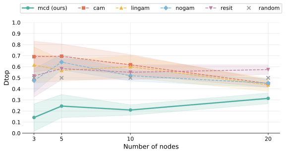
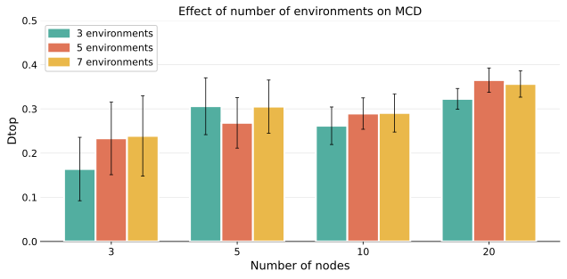

Causal Learning with the Invariance Principle
Two auxiliary environments suffice to identify nonlinear causal graphs
Causal discovery, the problem of inferring the direction of causality, is generally ill-posed. We use the language of structural causal models (SCM) to show that assuming that the causal relations are acyclic and invariant across multiple environments (e.g., the way minimum wage affects employment rate is stable across different geographical regions), only two auxiliary environments are sufficient to infer the causal graph for arbitrary nonlinear mechanisms. Moreover, we demonstrate that this implies identifiability of the SCM functional mechanisms: as a corollary, we show that two auxiliary environments are sufficient to guarantee correct counterfactual inference. We empirically support our theoretical results on synthetic data.
Introduction
Causal discovery aims to recover the directed acyclic graph (DAG) of a structural causal model from observed data. From a single observational distribution the graph is generally identifiable only under strong parametric restrictions — for example additive Gaussian noise (Hoyer et al. 2008), linear non-Gaussian mechanisms (Shimizu et al. 2006), or post-nonlinear models (Zhang and Hyvärinen 2009). These assumptions buy identifiability at the cost of realism.
The invariance principle offers a different lever: causal mechanisms are expected to stay fixed while the world around them changes (Peters et al. 2016). We push this idea to its limit and ask how much environment variation is necessary to identify a fully nonlinear SCM.
A claim that deserves a caveat lives in a margin footnote.1
1 We assume the mixing function \mathbf{f} is bijective and that auxiliary environments shift the source distribution without altering the mechanisms — interventions on the exogenous noise, not on the structural maps.
How invariance pins down the graph
The argument has a clean logical shape, and it runs in four steps.
From a single observational distribution p(\mathbf{X}), several candidate graphs reproduce the same observations: edge directions cannot be told apart, so the graph is non-identifiable. An auxiliary environment then reshapes the source distribution p(\mathbf{S}) while the mixing \mathbf{f} — the mechanism — stays fixed; two sufficiently different environments carry exactly the variation the proof needs. What stays invariant across these shifts marks the true mechanism, so contrasting the environments resolves the ambiguous edges into a single causal graph. Multi-environment Causal Discovery then peels off a sink (a node with no children), removes it, and repeats — reading off the full topological order (Montagna 2026).
Preliminaries
We model the observed variables \mathbf{X} \in \mathbb{R}^d as a bijective mixing of independent latent sources \mathbf{S},
\mathbf{X} = \mathbf{f}(\mathbf{S}), \qquad p_{\mathbf{S}}(\mathbf{s}) = \prod_{i=1}^{d} p(s_i),
subject to a triangularity constraint: there exists a permutation matrix P such that P\, J_{\mathbf{f}}\, P^{\top} is lower triangular, where J_{\mathbf{f}} is the Jacobian of \mathbf{f}. This constraint is exactly what lets the mixing be read as a set of acyclic structural equations
X_i := F_i\!\left(\mathbf{X}_{\mathrm{PA}_i},\, S_i\right), \qquad i = 1, \dots, d,
with \mathbf{X}_{\mathrm{PA}_i} the parents of node i. Inline, the per-node source s_i plays the role of the structural noise term.
Why bijectivity? It ties the SCM to nonlinear ICA: each source s_i maps to one structural equation, so identifying the unmixing recovers both the graph and the mechanisms. The link to time-contrastive ICA (Hyvärinen and Morioka 2016) is what makes multi-environment data informative.
Identifiability from two environments
An auxiliary environment e shifts the source distribution but preserves the mixing \mathbf{f}:
\mathbf{X}^{e} = \mathbf{f}(\mathbf{S}^{e}), \qquad p^{e}_{\mathbf{S}}(\mathbf{s}) = \prod_{i=1}^{d} p^{e}(s_i).
Because \mathbf{f} is shared, contrasting two environments isolates it. With a single environment the graph stays ambiguous — one distribution is consistent with multiple orderings; with two sufficiently different environments it is pinned down to a single identified graph.
Theorem 1 (Graph identifiability). Given an SCM \mathbf{X} = \mathbf{f}(\mathbf{S}) with bijective \mathbf{f}, the causal graph is identifiable from only two sufficiently different auxiliary environments.
Theorem 2 (ICA identifiability). Under the same conditions (plus domain connectivity), the mixing \mathbf{f} is identifiable up to an invertible, elementwise reparametrization of the sources.
The “sufficiently different” condition is a variability requirement on the source distributions across environments — the analogue of the sufficient-variability assumption in nonlinear ICA. Intuitively, the more the environments differ, the fewer candidate graphs survive both distributions, until only the true graph remains. This is a qualitative geometric condition: it asks that the first- and second-order differences of the log-densities are not aligned, ruling out only pathological environment choices.
The same two auxiliary environments that pin down the structure also suffice for the full counterfactual picture.
Corollary 1 (Counterfactuals). Under the conditions of Theorem 2, the SCM is counterfactually identifiable from the observational distribution and two auxiliary environments.
Algorithm and experiments
The theory yields a practical estimator, Multi-environment Causal Discovery (MCD), which fits a shared bijective unmixing while letting per-source densities vary across environments, then reads off the triangular structure of the recovered Jacobian.
We evaluate on synthetic SCMs over Erdős–Rényi graphs with 3–20 nodes, mixing linear-Gaussian and nonlinear (ResNet) mechanisms that are not identifiable from a single environment. Performance is measured by the normalized topological divergence D_{\mathrm{top}} \in [0,1] (lower is better), which counts ordering errors against the ground-truth DAG. As the figure reports, MCD stays low and degrades only gently with graph size, while classical single-environment baselines sit near chance (Figure 1).

From the original paper (Montagna & Locatello, 2026). Highlights added for this walkthrough.
Step 01 — Auxiliary environments recover the order With two auxiliary environments, MCD (the green curve) stays near the floor of D_{\mathrm{top}} across every graph size — from about 0.1 at three nodes to about 0.3 at twenty. The ordering errors stay small precisely where the invariance principle says they should: the shared mechanism is pinned down, so the causal direction is read off correctly.
Step 02 — Observational baselines stall at chance The classical single-environment methods — CAM, LiNGAM, NoGAM, RESIT — perform no better than the random ordering marked by the grey crosses. On these linear-Gaussian and nonlinear settings the data are non-identifiable from pure observations, so these methods have nothing to latch onto.
Step 03 — The gap is widest where structure is clearest Look at the left edge, the small graphs. At three and five nodes the separation is starkest: MCD sits far below the chance band while every observational baseline floats near it. The same two environments that the identifiability theory calls for are exactly what opens this gap — variation, not parametric assumptions, is what makes the direction recoverable.
On these non-identifiable linear-Gaussian and nonlinear settings, the single-environment baselines (CAM, RESIT, LiNGAM, NoGAM) perform no better than random, whereas MCD recovers the ordering across the full range of graph sizes (Figure 1).
Adding environments beyond what the theory requires brings no clear benefit: the two auxiliary environments that the identifiability result calls for already carry the variation MCD needs, and supplying more does not measurably improve inference accuracy (Figure 2).
Toggle between the two views below: the main result is what MCD recovers across graph sizes; the environment-count panel is how little it needs to do so.

From the original paper (Montagna & Locatello, 2026).
Conclusion
Treating environments as a resource rather than a nuisance turns the invariance principle into a constructive identifiability result: two auxiliary environments suffice for the graph, the mechanisms, and counterfactuals alike — without parametric assumptions on the nonlinear maps. This connects multi-environment causal discovery (Montagna 2026) to the broader program of causal representation learning (Schölkopf et al. 2021), and recovers structure exactly where classical single-distribution estimators (Pearl 2009) cannot. References appear in the margin and are collected below; a copyable BibTeX entry for this paper is generated automatically.
Citation
@article{montagna2026,
author = {Montagna, Francesco and Locatello, Francesco},
title = {Causal {Learning} with the {Invariance} {Principle}},
journal = {arXiv preprint},
date = {2026-05-13}
}